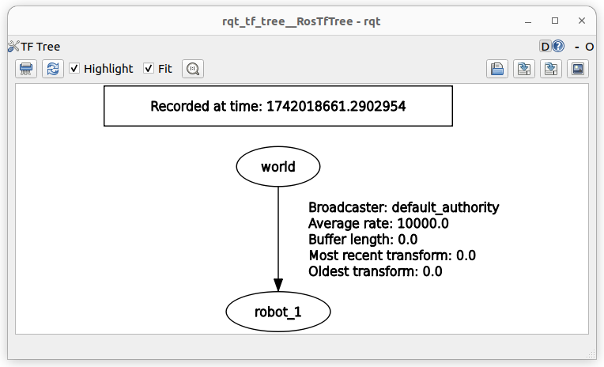
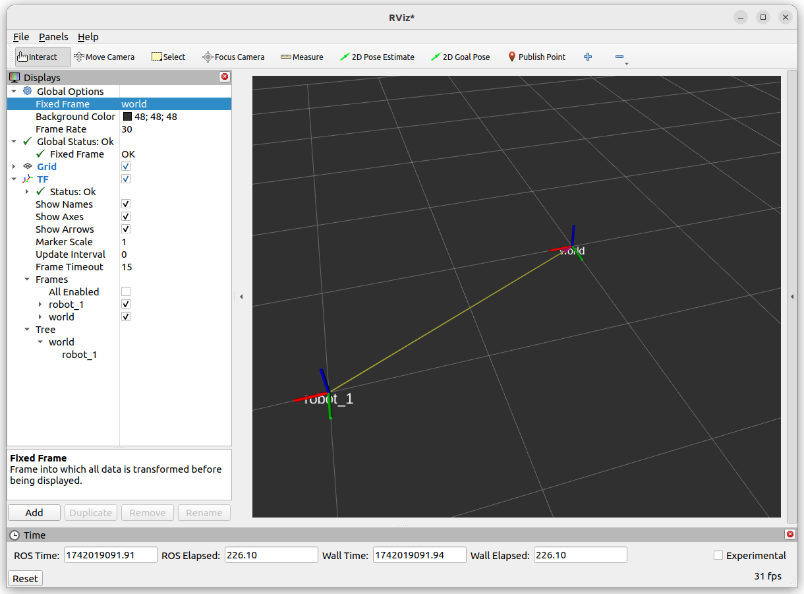
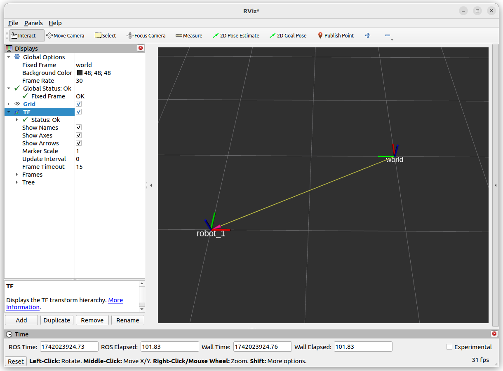
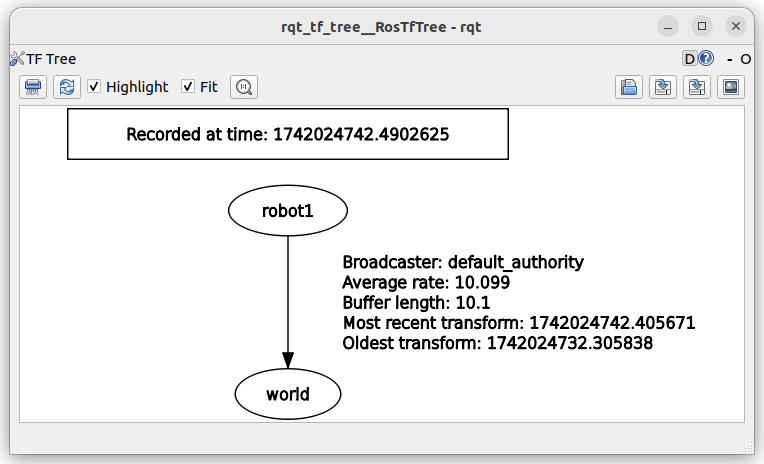

quaternion
ros
tf
tf2
TF2
tf2 provides a coordinate transformation framework, allowing nodes to track and transform data between different coordinate frames over time
Rotation and Translation Matrix
Translation : Shifts a point in space (represented as a vector [x, y, z]).Rotation : Rotates a point around an axis (using quaternions or rotation matrices).
A transformation matrix combines rotation and translation
\[
T=\begin{bmatrix}
R & t \\
0 & 1
\end{bmatrix}
\]
\[
T = \begin{bmatrix}
r_{11} & r_{12} & r_{13} & x \\
r_{21} & r_{22} & r_{23} & y \\
r_{31} & r_{32} & r_{33} & z \\
0 & 0 & 0 & 1
\end{bmatrix}
\]
Install ROS tf support packages
install apt-get install \
\
\
Static and Dynamic TF
Static TF
Use to publish fix coordinate relation (coordinate that not change in time) it publish to tf_static topic
Demo
Publish the relation between world to robot_1
publish static tf # new style quaternion
run tf2_ros static_transform_publisher --x 2 --y 1 --z 0 --qx 0 --qy 0 --qz 0 --qw 1 --frame-id world --child-frame-id robot_1
# new style euler
run tf2_ros static_transform_publisher --x 2 --y 1 --z 0 --roll 0 --pitch 0 --yaw 0 --frame-id world --child-frame-id robot_1
#
( '2.000000' , '1.000000' , '0.000000' )
( '0.000000' , '0.000000' , '0.000000' , '1.000000' )
'world' to 'robot_1'
echo topic topic echo /tf_static
header:
stamp:
sec: 1742018434
nanosec: 760327680
frame_id: world
child_frame_id: robot_1
transform:
translation:
x: 2 .0
y: 1 .0
z: 0 .0
rotation:
x: 0 .0
y: 0 .0
z: 0 .0
w: 1 .0


Resolve code
ROS node that resolve the translation and Rotation between two coordinate, in the example is to resolve between robot_1 to world,
tf resolve code
#!/bin/usr/env python
import rclpy
from rclpy.node import Node
import tf2_ros
from geometry_msgs.msg import TransformStamped
class TFResolver ( Node ):
def __init__ ( self ):
super () . __init__ ( 'tf_resolver' )
# Create TF buffer and listener
self . tf_buffer = tf2_ros . Buffer ()
self . tf_listener = tf2_ros . TransformListener ( self . tf_buffer , self )
# Timer to check TF every 1 second
self . timer = self . create_timer ( 1.0 , self . lookup_transform )
def lookup_transform ( self ):
from_frame = 'robot_1'
to_frame = 'world'
try :
# Lookup transform from 'world' to 'robot_1'
transform : TransformStamped = self . tf_buffer . lookup_transform ( from_frame , to_frame , rclpy . time . Time ())
# Extract translation
translation = transform . transform . translation
self . get_logger () . info ( f "Translation: x= { translation . x } , y= { translation . y } , z= { translation . z } " )
# Extract rotation (quaternion)
rotation = transform . transform . rotation
self . get_logger () . info ( f "Rotation (quaternion): x= { rotation . x } , y= { rotation . y } , z= { rotation . z } , w= { rotation . w } " )
except tf2_ros . LookupException :
self . get_logger () . warn ( f "Transform from { from_frame } to { to_frame } not found!" )
except tf2_ros . ConnectivityException :
self . get_logger () . warn ( "Connectivity issue!" )
except tf2_ros . ExtrapolationException :
self . get_logger () . warn ( "Extrapolation error!" )
def main ():
rclpy . init ()
node = TFResolver ()
rclpy . spin ( node )
rclpy . shutdown ()
if __name__ == '__main__' :
main ()
The robot_1 need to move back 2m in X and 1m back in Y to return to the word coordinate frame
Send static tf from code
static tf
StaticTransformBroadcaster #!/bin/usr/env python
import rclpy
from rclpy.node import Node
from tf2_ros import StaticTransformBroadcaster
from geometry_msgs.msg import TransformStamped
class StaticTFPublisher ( Node ):
def __init__ ( self ):
super () . __init__ ( 'static_tf_publisher' )
self . tf_broadcaster = StaticTransformBroadcaster ( self )
self . publish_static_transform ()
def publish_static_transform ( self ):
t = TransformStamped ()
t . header . stamp = self . get_clock () . now () . to_msg ()
t . header . frame_id = 'robot_1'
t . child_frame_id = 'world'
t . transform . translation . x = 2.0
t . transform . translation . y = 1.0
t . transform . translation . z = 0.0
# Set Rotation (Quaternion)
t . transform . rotation . x = 0.0
t . transform . rotation . y = 0.0
t . transform . rotation . z = 0.7071 # 90° rotation around Z
t . transform . rotation . w = 0.7071
self . tf_broadcaster . sendTransform ( t )
self . get_logger () . info ( "Published static transform" )
rclpy . init ()
node = StaticTFPublisher ()
rclpy . spin ( node )
rclpy . shutdown ()

Dynamic TF
Demo: Dynamic TF
Publish tf in 10 HZ, (change robot orientation)
dynamic tf broadcaster
#!/bin/usr/env python
import rclpy
from rclpy.node import Node
from tf2_ros import TransformBroadcaster
from geometry_msgs.msg import TransformStamped
import math
HZ = 0.1
class MovingTFPublisher ( Node ):
def __init__ ( self ):
super () . __init__ ( 'moving_tf_publisher' )
self . tf_broadcaster = TransformBroadcaster ( self )
self . timer = self . create_timer ( HZ , self . publish_transform )
self . t = 0 # Time step
def publish_transform ( self ):
t = TransformStamped ()
t . header . stamp = self . get_clock () . now () . to_msg ()
t . header . frame_id = 'robot_1'
t . child_frame_id = 'world'
# Simulate movement: circular motion
t . transform . translation . x = 2.0 * math . cos ( self . t )
t . transform . translation . y = 2.0 * math . sin ( self . t )
t . transform . translation . z = 0.0
# Quaternion Rotation (yaw only)
qz = math . sin ( self . t / 2 )
qw = math . cos ( self . t / 2 )
t . transform . rotation . z = qz
t . transform . rotation . w = qw
self . tf_broadcaster . sendTransform ( t )
self . t += 0.1 # Increment time step
self . get_logger () . info ( "Publish tf" )
rclpy . init ()
node = MovingTFPublisher ()
rclpy . spin ( node )
rclpy . shutdown ()

tf resolver
#!/bin/usr/env python
import rclpy
from rclpy.node import Node
from tf2_ros import TransformBroadcaster
from geometry_msgs.msg import TransformStamped
import math
HZ = 0.1
class MovingTFPublisher ( Node ):
def __init__ ( self ):
super () . __init__ ( 'moving_tf_publisher' )
self . tf_broadcaster = TransformBroadcaster ( self )
self . timer = self . create_timer ( HZ , self . publish_transform )
self . t = 0 # Time step
def publish_transform ( self ):
t = TransformStamped ()
t . header . stamp = self . get_clock () . now () . to_msg ()
t . header . frame_id = 'robot_1'
t . child_frame_id = 'world'
# Simulate movement: circular motion
t . transform . translation . x = 2.0 * math . cos ( self . t )
t . transform . translation . y = 2.0 * math . sin ( self . t )
t . transform . translation . z = 0.0
# Quaternion Rotation (yaw only)
qz = math . sin ( self . t / 2 )
qw = math . cos ( self . t / 2 )
t . transform . rotation . z = qz
t . transform . rotation . w = qw
self . tf_broadcaster . sendTransform ( t )
self . t += 0.1 # Increment time step
self . get_logger () . info ( "Publish tf" )
rclpy . init ()
node = MovingTFPublisher ()
rclpy . spin ( node )
rclpy . shutdown ()
Qos
Buffer duration (size)
QOS
Change listener QOS
Listener QoS
default tf QOS topic info --verbose /tf
tf2_msgs/msg/TFMessage
count: 1
name: moving_tf_publisher
namespace: /
type: tf2_msgs/msg/TFMessage
type: PUBLISHER
01 .10.75.c8.eb.03.e1.a2.15.e9.45.5c.00.00.14.03.00.00.00.00.00.00.00.00
profile:
Reliability: RELIABLE
History ( Depth) : KEEP_LAST ( 100 )
Durability: VOLATILE
Lifespan: Infinite
Deadline: Infinite
Liveliness: AUTOMATIC
Liveliness lease duration: Infinite
count: 1
name: tf_resolver
namespace: /
type: tf2_msgs/msg/TFMessage
type: SUBSCRIPTION
01 .10.e4.9b.73.91.d0.2b.17.52.17.b6.00.00.14.04.00.00.00.00.00.00.00.00
profile:
Reliability: RELIABLE
History ( Depth) : KEEP_LAST ( 100 )
Durability: VOLATILE
Lifespan: Infinite
Deadline: Infinite
Liveliness: AUTOMATIC
Liveliness lease duration: Infinite
tf listener with best effort qos
#!/bin/usr/env python
import rclpy
from rclpy.node import Node
import tf2_ros
from geometry_msgs.msg import TransformStamped
from rclpy.qos import QoSProfile , QoSReliabilityPolicy , QoSHistoryPolicy , QoSDurabilityPolicy
RESOLVE_HZ = 0.5
class TFResolver ( Node ):
def __init__ ( self ):
super () . __init__ ( 'tf_resolver' )
qos = QoSProfile (
reliability = QoSReliabilityPolicy . BEST_EFFORT , # RELIABLE is default
history = QoSHistoryPolicy . KEEP_LAST ,
depth = 10 , # Adjust buffer size
durability = QoSDurabilityPolicy . VOLATILE # TRANSIENT_LOCAL is default for TF
)
# Create TF buffer and listener
self . tf_buffer = tf2_ros . Buffer ( cache_time = rclpy . duration . Duration ( seconds = 0.1 ))
self . tf_listener = tf2_ros . TransformListener ( self . tf_buffer , self , qos = qos )
# Timer to check TF every 1 second
self . timer = self . create_timer ( RESOLVE_HZ , self . lookup_transform )
def lookup_transform ( self ):
from_frame = 'robot_1'
to_frame = 'world'
try :
# Lookup transform from 'world' to 'robot_1'
transform : TransformStamped = self . tf_buffer . lookup_transform ( from_frame , to_frame , rclpy . time . Time ())
# Extract translation
translation = transform . transform . translation
self . get_logger () . info ( f "Translation: x= { translation . x } , y= { translation . y } , z= { translation . z } " )
# Extract rotation (quaternion)
rotation = transform . transform . rotation
self . get_logger () . info ( f "Rotation (quaternion): x= { rotation . x } , y= { rotation . y } , z= { rotation . z } , w= { rotation . w } " )
except tf2_ros . LookupException :
self . get_logger () . warn ( f "Transform from { from_frame } to { to_frame } not found!" )
except tf2_ros . ConnectivityException :
self . get_logger () . warn ( "Connectivity issue!" )
except tf2_ros . ExtrapolationException :
self . get_logger () . warn ( "Extrapolation error!" )
def main ():
rclpy . init ()
node = TFResolver ()
rclpy . spin ( node )
rclpy . shutdown ()
if __name__ == '__main__' :
main ()
Reference